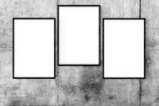

A CELTA teacher's toolkit: the introduction

Nothing can properly replace live teaching of real students
observed by an experienced and knowledgeable tutor and these short guides
are not intended to do that.
On your CELTA course, you are going to do a good deal of teaching,
possibly, depending on your course programme, starting with mini-lessons and working your way up to longer
sessions where a range of skills needs to be demonstrated.
Over a course, you must be assessed teaching for a minimum of six
hours and observe more experienced practitioners for a further six
hours.
These short guides cover the most important things you need to think
about when you are planning and preparing to teach and when you are
teaching. Each part is quite short a we will try to keep it simple, practical and
accessible.
There are tasks to do as you go along so have a pen and paper handy.
There are a number of parts to this mini-course because there's a lot to cover so
use the menu on the left to select the sections you need now.
There are other links on the left which take you to the indexes of
teaching-related guides in the initial plus section of the site.
There is also a link, the last one, to the sister course concerned
with what you need to know about the grammar of English for an
initial training course. It opens in a new tab.
Before you embark on any of the sections, we need to get two things straight: the difference between telling and showing and the ability to recognise which part of a lesson is serving what function.
Show me how to do it |
There are, if you look for them, quite a lot of videos of people teaching various aspects of the language on the web. Unfortunately, few are completely free or do not require you to sign up and register before you can view them. Many are commercial undertakings designed to make a little money (yours in this case). Even more unfortunately, some videos (and we will mention no names) are very poor examples of teaching methodology although they may be useful to help you recognise what you should avoid doing. If you compare what you see with the advice below, you'll be able to detect them.
The other issue to get out of the way here is how learning
(yours) on a CELTA course (or most other initial training
programmes) happens or is intended to happen.
Simply put, CELTA-level courses are a form of on-the-job training.
Less politely, it is called sitting at Nellie's knee and even less
politely monkey-see-monkey-do training.
You are expected to watch how someone else (usually one of your
tutors or someone on a video) does a bit of teaching and then
encouraged to emulate what you have seen. Copy it, in other words.
This sort of training can be very effective if two conditions are
met:
- What you observe is a master practitioner at work, not a novice or a poor teacher.
- You are helped by a good trainer to notice the salient parts of the behaviour you are observing and ignore the peripheral matters.
On good courses, both these criteria will be met; on others they
will probably not.
You may also hear your tutors talk darkly of something called loop
input. Briefly, what this means is that the content of the
training you receive is relevant to what you need to know and is
presented in a way that you can emulate in the classroom.
For
example, if you are learning how to develop reading skills in the
classroom, you may be given a text on reading skills and a set of
tasks, the types of which you are encouraged to copy with your
learners. In this way, not only is the material relevant but
the way the material is used is an exemplar of how to handle reading
texts in the classroom. For more, see Woodward (2003).
Loop input training is frequently used on initial training courses
(and its use is even more often claimed, despite appearances) and
good trainers can adapt and present things in a way that acts both
as a source of information about teaching and an example of how to
teach. Not all trainers are actually that good but that is
another matter.
However, this is not the only way to learn and this guide takes
the view that you an intelligent and insightful person who can read
and understand some simple advice and put it into practice without
having to sit at someone else's knee and be shown what to do.
If that is also how you see yourself, read on.
Phases of a lesson |
Good lessons are not random collections of activities, they are
organised into identifiable phases so the learners know what they
should be doing, when they should be doing it and why they are doing
it. As an observer, you should be able to identify virtually
instantly what phase of the lesson has been reached and what its
purposes are. When you are observed, the same criterion
applies.
Although the ordering of phases is not set in stone, with different
lessons following different overall outline procedures and ordering
phases differently, most of the following will occur in all lessons.
- Setting up and focusing:

This phase comes at the beginning of nearly all lessons and has three purposes:- to establish a pleasant and unthreatening learning atmosphere
- to let the learners know what the aims of the lesson are
- to focus the learners on the topic of the lesson or the scene in which the language will be set
- Task setting

This phase will often be repeated at different times and with different purposes for each task or activity but it will be signalled clearly to learners so they know what the task is and what it's for. The phase will be focused on the need to give the learners a reason for doing anything. - Monitoring
This phase has two purposes and two procedures to match:- check monitoring to make sure the learners are on task and the instruction has been understood and followed
- support monitoring in which the teacher's role is to supply help where needed, keep people focused and help the process along so that everyone is contributing to the best of their ability
- Feedback

This phase is also of two types:- feedback to the learners on what they have done and how they have performed
- feedback from the learners to the teacher so it is clear whether it is safe to move on
- Framing or transition signalling

This is a short phase which will occur repeatedly. Its function is to alert the learners to the fact that one phase has finished and another is about to begin. It will also often be combined with a re-focusing phase. - Re-capping and summarising
This phase, too, may be repeated and usually forms the final phase of a good lesson because it gives the learners the opportunity to see what they have learned and identify the important elements of the lesson. More generalised feedback to and from the learners is often part of this phase.
As you can see, lots of different things happen in classrooms and the mass of data you are exposed to if you watch a good teacher at work can sometimes be overwhelming so you need to break things down as we have done here to get the wood out of the way of the trees.
What follows? |
 |
To start us off, try a matching
task based on the phases of a lesson. Read through the whole task before you start and then match the activity to a description of what is happening in the classroom. The exercise is timed: you have two minutes. Click on the ? to start the test. |
How did you do?
The test was not very difficult and this course covers each of the phases
you identified and elaborates a little about how you should
conduct the various phases of a lesson.
At the beginning of an initial training course, you will probably not be asked
to conduct more than one or two phases but later on, you will have
to do all of them.
Now you are in the right place to use the menu on the left to access the guides you need.
You can return to this page by clicking on the link on the left to The toolkit.
More help with teaching |
There are lots more guides covering all sorts of teaching skills on this site.
| For links to those, try: | |
| planning for CELTA | What to include and how to set out a CELTA lesson plan |
| teaching on CELTA | this covers more of the background to planning, deciding on lesson shapes, dealing with feedback and so on. It is a more general guide focusing on the whole area. |
| materials for teachers | for help with designing lessons and tasks, including a lesson plan with materials for an example lesson |
| structuring lessons | for a bit more on how to make sure a lesson has a logical progression |
| being clear | for more on ways to make teacher talk clear and efficient |
| concept-checking questions | for the guide to what these are, why they are used and how to ask them |
| grouping learners | a guide to matching the way people are grouped to what they have to do |
| the initial plus index | These links will help you find guides to all the areas of language and skills that you are likely to meet on a CELTA course |
Reference:
Woodward, T, 2003, Key Concepts in ELT: Loop Input, English Language Teaching
Journal, 57/3, July 2003, pp301-304, Oxford: Oxford University Press